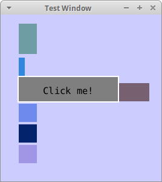

Persistent GUI
Defining the GUI is done all in C. Eventually, it could be made possible to set it using an XML file or a script. For now I am fine with the C method. The method I found seems to be a very flexible one. It uses the persistent OOP method I have described earlier.
Using persistent OOP, custom controls can be created and used alongside the already existing controls. Custom controls can be created as structs that contain some essential information or completely aggregate controls, that are just IDs.
At the moment I have defined 3 essential methods that needs to be supported for all controls. These are
render_control_method: Rendering the control.measure_control_method: Measure the size of the control.mouse_over_method: for sending mouse events down the heirarchy of controls.
The functionality of render_control_method gives itself. Some controls do not contain any visual components, but are only used for laying out other controls. This is the case for stack panels and bare controls. measure_control_method is required for other controls to lay out child controls. mouse_over_method is needed for the mouse event to be propagated properly down to child controls.
There are default implementations of all these methods for the ui_element_class. Any object can inherit from ui_element_class and by that get a default implementation that just renders all child elements inside it.
I have implemented a button control as a purely aggregated control, consisting of a rectangle, giving it a background and a sub control, like a text block. The clicked method can be implemented by defining the mousedownmethod for a button. Eventually, I will define the clicked method for the button which requires an up and down event before it is invoked.
int color_idx = 0; vec3 colors[] = {vec3_new(1,0,0), vec3_new(0,1,0), vec3_new(0, 0, 1)}; void my_button_clicked(u64 control, double x, double y){ vec2 size; measure_child_controls(control, &size); if(x > size.x || y > size.y || x < 0 || y < 0) return; rectangle * r = get_rectangle("rect4"); r->color = colors[color_idx]; color_idx = (color_idx + 1) % array_count(colors); } define_method(btn_test->id, mouse_down_method, (method) my_button_clicked);
The clicked event contains a bit more code than what will be needed in the end. At the moment it is required to check that the click is acutally withing the button.
Basically it seems to work. The screenshot seen below is from the working prototype, for which the source can be found at the demo1 branch at https://github.com/rolfrm/persistent_programming_demo/tree/demo1.

Figure 1: Demo of the first version of the GUI library
1 Next up
A long list of items needs to be implemented for the library to be generally usable. Once completed with this list of items, larger demos can be built to test it out.
- Fix window coordinates to start in the upper left corner.
- Simplify the way mouse events are propagated (Get rid of measure).
- Simplify creating controls. For example, it should not be necessesary to explicitly set the subclass of most controls.
- Rectangles with rounded borders.
- Dynamic brushes. Gradient brush, texture brush, …
- Controls
- Grid control: Arrange items in a grid.
- check box: For boolean values.
- text box: For text inputs.
- pop-up: For example for drop-down menus.